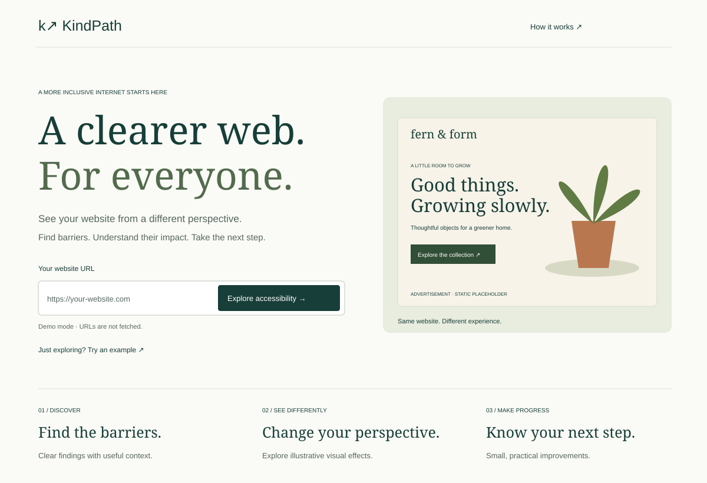
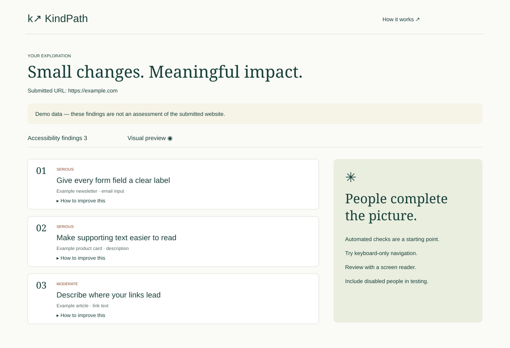
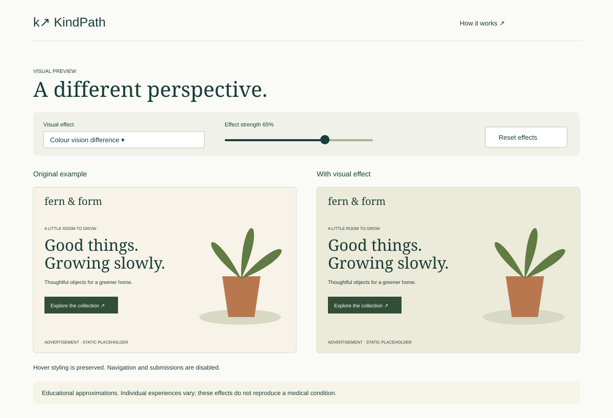

A clearer web. For everyone.
Three design boards exploring the KindPath experience: website submission, accessibility findings, and visual comparison.



Three design boards exploring the KindPath experience: website submission, accessibility findings, and visual comparison.


